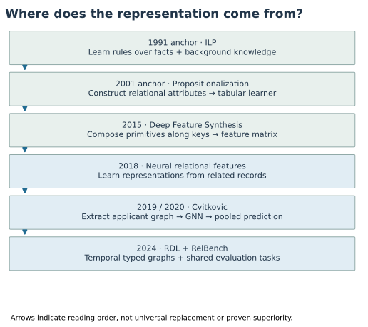
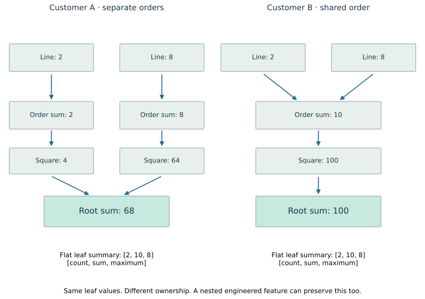

Year 4 · Quarter 1 · Lesson 121
History of relational ML: rules, features, and graphs
The question that connects the history¶
Your tangible win: draw a defensible prior-art map and explain, with numbers and code, where each method puts the work of discovering useful relational information. The map is a history of different choices, not a ranking in which every newer method wins.
Lesson 118 built Cvitkovic's model. Lesson 120 asked you to defend a complete pipeline. We now ask why that pipeline exists. This grounds the mission: a claim that relational deep learning adds value needs to survive comparison with earlier ways of using the same relationships. Preparing this lesson does not certify that you passed the Year 3 exam.
Route: understand the historical map; trace one small database; implement three computations; audit what the reproduction establishes; write your own map. Work through one section at a time. The research and reproduction appendix can take a separate session.
Open the student notebook, executed reference notebook, and quick reference. The notebook contains the visible mechanism code and full Cvitkovic model/trainer. It runs without the private competition data.
1 · Read the map as a set of design choices¶
A relational database stores rows in several tables. A primary key identifies a row. A foreign key names a related row in another table. A model must turn that variable-sized neighborhood into a prediction for a particular entity or query.


| Historical anchor | What is constructed or learned? | Useful capability | Burden that remains |
|---|---|---|---|
| ILP, 1991 anchor | Logical rules over relations and background knowledge | Express explicit relational conditions | Choose vocabulary and constrain the rule search |
| Propositionalization, 2001 anchor | A fixed feature vector from relational descriptions | Reuse ordinary attribute-value learners | Decide which relational distinctions become features |
| Deep Feature Synthesis, 2015 | Compositions of feature primitives along relationships | Automate a large set of candidate features | Select primitives, depth, and a downstream estimator |
| Neural relational feature learning, 2018 | Learned representations from relational data | An earlier neural route in this history | Audit its own architecture and evaluation scope |
| Cvitkovic, 2019 / expanded 2020 | Row encoders, graph computation, pooled prediction | Train representation and predictor together | Extraction, scale, and experimental comparability |
| Fey and RelBench, 2024 | Temporal heterogeneous graph blueprint and shared tasks | Make pipelines and evaluation more systematic | Preserve query-time validity and compare strong baselines |
The dates are anchors for the readings, not claims that an entire family began that year. ILP and feature engineering remain useful. Neural relational learning also predates the selected GNN paper: Lam et al. 2018 is a necessary branch on the map. Do not write “relational learning began with GNNs.”
Primary readings: Muggleton 1991, §§1–2, Lavrač and Flach 2001, and Kanter and Veeramachaneni 2015, §II and Algorithm 1. For the selected neural experiment, read Cvitkovic 2020, §§3–5 and Appendix B.
2 · Start with a rule you can execute¶
In plain terms. A relational rule can ask whether a related row with a particular property exists. It need not flatten every possible child into a separate input column.
Worked example. Customer 7 has orders 11 and 12. Order 11 is on time; order 12 is late. Customer 8 has late order 13. Customer 9 has no orders. Write the condition “a customer has a late order” as:
has_late_order(customer) ← owns(customer, order) AND late(order)
The arrow means the condition on the right is sufficient for the statement on the left. order is an existential variable: at least one matching order is enough. The outputs for customers [7,8,9] are [True,True,False].
Inductive logic programming (ILP) learns logical programs using examples and background knowledge. Executing the rule above is deduction: apply an already supplied rule to facts. Learning which rule to use is induction. Our first exercise executes a rule; it does not implement an ILP search engine. This distinction follows the setting introduced by Muggleton.
TODO 1 — exists_late: return one Boolean per requested customer, in query order. Check empty neighborhoods, row permutations, and the difference between “has an order” and “has a late order.” Duplicate matching orders must not change an existential answer.
Pause and retrieve. Which part would an ILP system have to discover that this exercise receives as an input? Answer before moving on: the rule itself, rather than only its truth value on the database.
3 · Turn relations into columns, then automate the construction¶
Propositionalization turns relational information into a fixed set of attributes for each prediction example. A Boolean has_late_order can itself be one such attribute. The transformation makes existing tabular learners usable; its usefulness depends on what the attributes preserve. Lavrač and Flach.
Worked example. Suppose customer 7 has transaction amounts 2 and 4 available by day 5. The vector [COUNT, SUM, MAX] is [2,6,4]. A third amount 8 happened on day 4 but arrived on day 7. At day 5, including it would use information that had not arrived. At day 7 the vector becomes [3,14,8].
TODO 2 — aggregate_at: filter each row using both event_time <= cutoff and available_time <= cutoff, then compute count, sum and maximum. Use [0,0,0] for an empty group in this authored example. Preserve query order. The CHECK compares your result with an independent SQL query. In real features, an empty maximum needs an explicit missing-value convention; zero is a teaching choice here.
Deep Feature Synthesis (DFS) automates candidate feature construction by composing operations along table relationships. A primitive is a basic operation such as sum or a date transformation. The word “deep” refers to composing these operations; it does not imply a neural network. The original DFS paper, §II explains the construction. Current Featuretools documentation illustrates stacked aggregates.
Our hand-written aggregate is one feature recipe. It does not enumerate a DFS feature space or reproduce the Data Science Machine's tuning. Distinguish the algorithm that proposes features from the estimator fitted on their resulting values.
Preserve the intermediate grouping¶
Predict first: can two customers have the same transaction count, sum, and maximum, but different distributions of spending across orders?


Worked example. Both customers have line amounts [2,8], so both have [COUNT,SUM,MAX] = [2,10,8]. Customer A places them in two orders: order totals [2,8]. Customer B places both in one order: total [10]. Now compute the sum of squared order totals. For A, 2² + 8² = 68. For B, 10² = 100.
The two-stage recipe is: group lines by order; sum their amounts; square each order total; group orders by customer; sum again. Squaring before the second grouping retains a distinction that a single global sum would erase.
A repair is available to both families. An engineered nested feature can explicitly compute this recipe. A suitable graph computation can also preserve the intermediate order states. This example establishes a limitation of the three selected flat features, not a universal advantage of GNNs over feature engineering.
4 · Follow the same path as a differentiable computation¶
A message is a value passed from one node to another along an edge. An aggregation combines the messages received by a node. A differentiable computation allows derivatives of an output with respect to its inputs or parameters to be calculated through the operations.
TODO 3 — path_signal: implement the exact numerical recipe from the figure using tensor accumulation. First create an [n_orders,1] array of zeros. Sum each line amount into its order. Square the order totals. Sum these into an [n_customers,1] array. The code must use the ownership indices supplied to it, not a global mean or the order of the input rows.
order_values.index_add_(0, leaf_order, values)
root_values.index_add_(0, order_root, order_values.square())
index_add_ accumulates every source row into its indexed destination. Repeated destination indices mean addition, not replacement. The first operation follows Line→Order. The second follows Order→Customer. The completed function runs directly in the notebook experiment and its gradient check.
Trace the gradient. Customer A's output is x₁²+x₂². At inputs 2 and 8, its derivatives are 4 and 16. Customer B's lines receive zero derivative from A's output because no ownership path connects them to A. The CHECK tests that separation and invariance to line-row permutations.
Scope check. This fixed square operator has no learned parameters. It exposes a path that a learned message-passing model can use; it is not Cvitkovic's GCN. Adding learnable weights does not automatically guarantee that training will discover a useful representation.
5 · What changed with the selected Cvitkovic model?¶
The 2019 workshop version and expanded February 2020 version are separate source objects. The latter supplies our Home Credit experiment. Its Table 4 reports GCN AUROC 0.780 ± 0.004 and DFS+GBDT 0.777 ± 0.004 on Home Credit. AUROC measures ranking of positive versus negative cases; larger is better. These are published values, not results of this lesson.
The paper reports an advantage over automated feature engineering on two of three datasets. Its KDD Cup result is counter-evidence to a universal-win story. Small mean differences and fold variation alone do not establish statistical superiority. Expanded paper, Table 4.
Model architecture: read the actual prediction path¶

Diagram trace. Locate the shared graph convolution and the graph-specific pooling. Which computation is inherited from Lesson 118? On a narrow screen, scroll the figure sideways.
Read the diagram from the applicant graph downward. Table-specific encoders turn categorical and numerical row values into 256-dimensional vectors. Reverse edges and self-loops support a shared GCN computation. A gate branch assigns graph-local weights; a value branch transforms node states. Their weighted sum produces one graph representation and a two-logit classifier output. A logit is a score before conversion to a class probability. The pooling reads all selected nodes.
Decode the computation. In the diagram, N is the number of selected rows and H is their N×256 state matrix. A records incoming computation edges, including added reverse edges and self-loops. D is the diagonal matrix of node degrees. Multiplying by D⁻½ A D⁻½ sums neighbors with a weight of 1/sqrt(degree_source × degree_receiver) on each edge. W and b are learned weights and a bias. SELU is a nonlinear activation, applied coordinate by coordinate. Dropout randomly suppresses coordinates during training and is disabled for evaluation.
Follow the readout. The gate branch produces one scalar per node. Softmax exponentiates these scalars and divides by their sum within that applicant graph, yielding weights αᵥ that sum to one. The value branch produces a 256-coordinate vector per node. The sum r = Σᵥ αᵥ value(H′ᵥ) is therefore one 256-coordinate applicant representation. The classifier maps it to two scores. Cross-entropy penalizes low probability on the true class; AdamW uses gradients to update model parameters. Validation AUROC chooses a checkpoint, while test-fold AUROC evaluates the chosen checkpoint. The normalization operation and full forward code are visible in the notebook.
The notebook inlines the complete selected model and trainer from the pinned released-code port, in annotated sections. Follow RowEncoder, CvitkovicGCN, attention_pool, and fit_fold. The exact released choices and modern-runtime differences are in the L118 protocol. There is no need to infer an implementation from a generic GNN box.
Extraction is part of the model's input contract¶
The paper's general two-phase RDBToGraph procedure and the released Home Credit query are different procedures. Home Credit uses undirected paths of length zero through two around an applicant. The returned graph contains the nodes and relationships visited by those paths. Do not silently replace that with arbitrary closure or assume every induced edge was returned. Released extraction code.
A reproducible model result needs the right graph, feature conversion, folds, training schedule, selection rule, and scoring. The original source even creates a payment's applicant edge before attempting to match its previous application. A missing previous key does not undo the already-created edge. That detail motivates our fresh extraction audit.
6 · Read the reproduction evidence without upgrading it¶
Full five-fold Home Credit experiment: NOT_RUN. No fresh held-out AUROC is claimed.
| Evidence | Measured result | Boundary |
|---|---|---|
| Original course grouping computation | 68 versus 100 | Fixed operator, not trained GCN accuracy |
| Raw previous-application key universe | 1,670,214 keys scanned | 32 selected applicants |
| Missing previous references in that sample | 14 globally absent; 0 cross-owner | Missing relation is not a dropped applicant edge |
| Original Neo4j extraction comparison | PASS after empty→null correction | 32 applicants; full-population equivalence NOT_CHECKED |
| Raw categorical cells corrected | 123 | Encoded tensors unchanged; original raw mismatch preserved in audit |
| Cached tensor/output/gradient check | EXACT on eight real graphs | Controlled computation, current runtime |
| Fresh cached timing pilot | 1,024 graphs; 130,886 nodes | Fixed reconstructed batch, no score evaluation |
| Cached batch collation median | 0.0434 seconds | Original preparation 1.490 seconds |
| Five-fold maximum-schedule projection | USD 15.70 | Excludes full cache construction, disk IO and overhead |
| Aggregate cap / overhead reserve | USD 10 / USD 2 | Pilot worker reservation USD 0.406296 |
The improved projection still exceeds the cap. Decision: do not launch five folds. Pilot function-body resource estimate: USD 0.002409; unitemized startup/build costs are separate. Historical training identity and whole-paper parity remain NOT_ESTABLISHED. Live Colab and deployment remain NOT_CHECKED.
Extraction audit · Raw-key audit · Cache check · Timing evidence · Budget.
Selected target: all 307,511 labeled applications, five released cross-validation folds, model seed 1234 reset per fold, maximum 300 epochs with patience 50, first-best validation AUROC, full test-fold scoring. The five folds are different held-out partitions, not five independent random-seed runs. The predeclared mean comparison tolerance is 0.01 AUROC; it is descriptive, not a statistical equivalence test.
Optimization boundary. We cache deterministic scalar/category conversion and graph indices. We do not cache learned embeddings, dropout masks, or model outputs. A controlled check requires identical tensors, training outputs, and gradients under the same random state. This supports the cache transformation, not full training parity.
Budget boundary. One bounded pilot is reserved before dispatch. The all-fold projection includes the maximum schedule and final tests, with separate startup/retry reserve. Early stopping might reduce runtime, but we do not launch on an optimistic assumption. The reproduction contract contains exact commands, source hashes, runtime pins, and remaining gaps. It also explains how the full-data runner refuses missing inputs or insufficient budget.
Exercise. Classify each statement as paper claim, measured source/implementation evidence, course mechanism result, or unestablished claim: “68 versus 100,” “the cached tensors agree,” “Home Credit AUROC is .780,” and “we reproduced all five folds.” Give the supporting artifact for each valid statement. The last statement is not supported here.
7 · Why Year 4 needs a temporal evaluation standard¶
The Fey 2024 blueprint describes relational data as a temporal heterogeneous graph: nodes represent rows, and typed links follow key relationships. Heterogeneous means node or edge types have different meanings. This provides a common modeling vocabulary. RelBench v1 supplies shared datasets, tasks, and evaluation protocols.
This is a shift in infrastructure and evaluation, not proof that earlier approaches never handled time. Feature engineering can respect cutoffs too. Our both-clock exercise illustrates a stricter availability contract; missing historical ingestion logs still limit what any retrospective audit can establish.
Lesson 122 will ask you to construct the relational entity graph from a schema. Carry forward three questions: which rows are visible for this query, which relationships are retained, and which computation can use them? The answer must be explicit before training starts.
8 · EXIT: build your own prior-art map¶
Complete the map and defense template. For each historical anchor, record the input representation, what is learned, where human choices enter, one primary source, and one limitation. Add a separate branch for the 2018 neural work. Attach your three implemented functions and notebook report.
Explain the 68-versus-100 example without notes. Then give an engineered feature that repairs the flat collision. Finally, explain why neither an extraction check nor a fast pilot establishes a reproduced AUROC. Cite one result that supports the mission and one that limits it.
Exit criterion: correct computation, a sourced map, a fair baseline repair, and an evidence claim that survives the stated boundaries. Author execution does not mark your mastery: PENDING_WRITTEN_DEFENSE.
In 1, 7, and 30 days, redraw the map and recompute the grouping example from memory. Ask the agent follow-up questions wherever a historical claim, ownership index, or reproduction decision remains unclear.
Carry this forward. Construct the row graph and verify every edge against a relational join. Continue to Lesson 122.